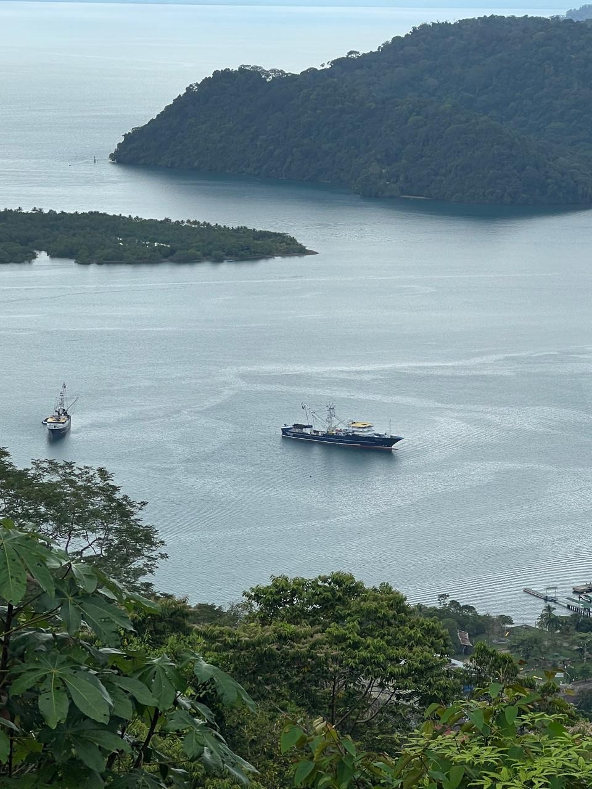

80 Hectáreas de Biodiversidad y Vistas Exclusivas
Ubicada en la provincia de Puntarenas, con acceso doble por Calle La Torre y Guaycará. Esta finca ofrece vistas inigualables a la Marina de Golfito y al Océano Pacífico.

Vista a la Marina desde la propiedad.

Horizonte del Pacífico.
Hogar de maderas preciosas como el Nazareno, Guapinol y Manu Negro. Sus tierras albergan una fauna vibrante: manigordos, ocelotes, monos congo y aves exóticas como lapas y trogones.


La finca cuenta con imponentes cascadas de más de 20 metros. Sus pozas cristalinas son ideales para nadar y practicar rapel, rodeados de peces y camarones de agua dulce.

Ideal para turismo de aventura, investigación biológica o un centro de retiro internacional. Una inversión estratégica en una de las zonas con mayor crecimiento ecoturístico de Costa Rica.